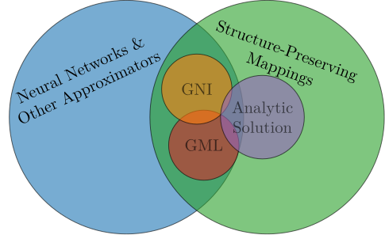
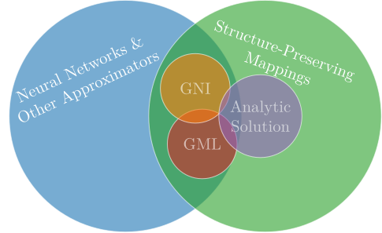
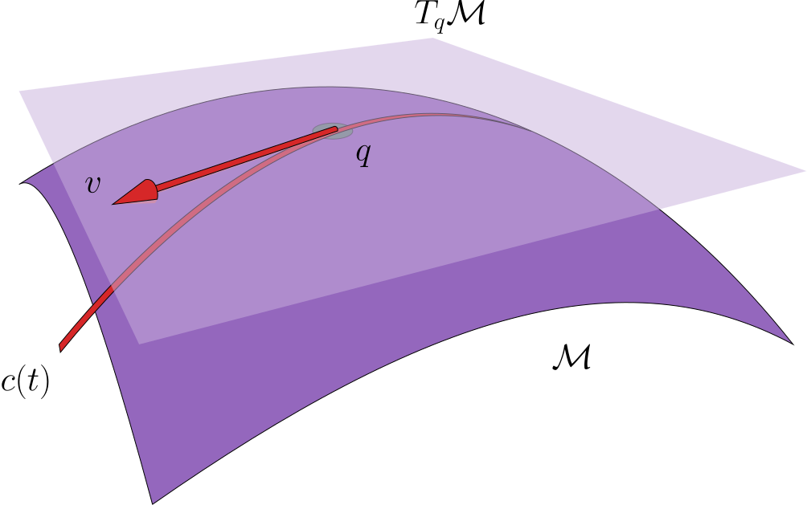
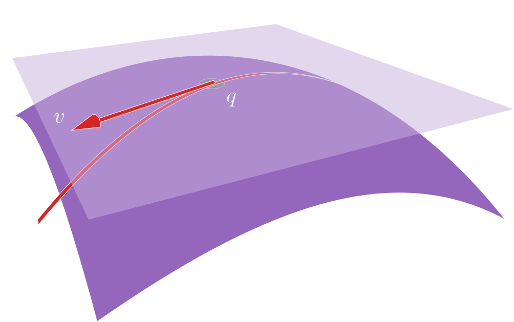

Introduction and Outline
One may argue that structure-preserving machine learning is a contradiction. One of the most popular books on neural networks [43] introduces the term machine learning the following way: "The difficulties faced by systems relying on hard-coded knowledge suggest that [artificial intelligence] systems need the ability to acquire their own knowledge, by extracting patterns from raw data. This capability is known as machine learning." The many success stories of deep neural networks such as ChatGPT [95] have shown that abandoning hard-coded knowledge in favour of extracting patterns can yield enormous improvement for many applications. In scientific computing the story is a different one however. Hard coding of certain properties into an algorithm has proved indispensible for many numerical applications. The introductory chapter to one of the canonical references on geometric numerical integration [1] contains the sentence: "It turned out that the preservation of geometric properties of the flow not only produces an improved qualitative behaviour, but also allows for a more accurate long-time integration than with general-purpose methods." Here "preservation of geometric properties" means hard-coding physical information into an algorithm.
Despite the allure of neglecting hard-coded knowledge in an "era of big data" [96] many researchers have very early realized that systems that work for image recognition, natural language processing and other purely data-driven tasks may not be suitable to treat problems from physics [97]. Scientific machine learning [98], which in this work refers to the application of machine learning techniques for the solution of differential equations from science and engineering, has however much too often neglected the preservation of geometric properties that has proved to be so important in traditional numerics. An ostensible solution is offered by so-called physics-informed neural networks (PINNS), whose eponymous paper [71] is one of the most-cited in scientific machine learning. The authors write: "Coming to our rescue, for many cases pertaining to the modeling of physical and biological systems, there exists a vast amount of prior knowledge that is currently not being utilized in modern machine learning practice." It is stated that PINNS "[enrich] deep learning with the longstanding developments in mathematical physics;" one should however add that they also ignore longstanding developments in numerics, like preserving the geometric properties which are observed to be crucial in [1].
What this work aims at doing is not "to set the foundations for a new paradigm" [71], but rather to show that in many cases it is advantageous to imbue neural networks with specific structure and one should to do this whenever possible. In this regard this work is much more closely related to traditional numerics than to neural network research as we try to design problem-specific algorithms rather than "universal approximators" [30]. The structure-preserving neural networks in this work are never fundamentally new architectures but build on existing neural network designs [5, 54] or more classical methods [68]. We design neural networks that have a specific structure encoded in them (modeling part) and then make their behavior reflect information found in data (machine learning part). We refer to this as geometric machine learning.
 
In the picture above we visualize that geometric machine learning aims at constructing so-called structure-preserving mappings that are ideally close to the analytic solution and perform better than classical methods (e.g. GNI). Structure-preserving here means that the model shares properties with the analytic solution of the underlying differential equation. In this work the most important of these properties are symplecticity and volume preservation, but this may extend to others such as the null space of certain operators [99] and symmetries encoded into a differential equation [100, 101].
For us the biggest motivation for geometric machine learning comes from data-driven reduced order modeling. There we want to find reduced representations of so-called full order models of which we have data available; such reduced representation ideally have much lower computational complexity then the full order model. Data-driven reduced order modeling is especially useful when solving parametric partial differential equations (PPDEs). In this case we can solve the full order model for a few parameter instances and then build a cheaper representation of the full model (a so-called reduced model) with neural networks. This can bring dramatic speed-ups in performance.
Closely linked to the research presented here is the development of a software package written in Julia called GeometricMachineLearning [102]. Throughout this work we will demonstrate concepts such as neural network architecture and (Riemannian) optimization by using GeometricMachineLearning[0]. Most sections contain a subsection Library Functions that explains types and functions in GeometricMachineLearning that pertain to the text in that section (they are generated as so-called docstrings [103]). We show an example here:
GeometricMachineLearning.GradientCache — TypeGradientCache(Y)Do not store anything.
The cache for the GradientOptimizer does not consider past information.
So the docstring shows the name of the type or method, in most cases how to call it and then gives some information explaining what it does and potentially hyperlinks to other similar docstrings (GradientOptimizer in this case); all of this information is indented by a tab. Docstrings may include other information under subheaders Arguments (showing the arguments the method can be supplied with), Examples (giving more detailed examples (including results) of how to use the method) and Implementation (giving details on how the method is implemented). When we reference a docstring it is always printed in blue (e.g. GradientOptimizer), indicating a hyperlink. In addition there is an index of docstrings showing all docstrings in chronological order with the associated page number.
Similar to Library Functions, which is included in most sections, almost every chapter concludes with a section Chapter Summary and an additional section References that shows further related reading material. The Chapter Summary recaps the important aspects of the corresponding chapter, states again what is new (this may be mathematical or software aspects) and gives information to what other parts of the dissertation the contents of the present chapter are relevant.
All the code necessary to reproduce the results is included in the text and does not have any specific hardware requirements. Except for training some of the neural networks (which was done on an NVIDA Geforce RTX 4090 [104]) all the code snippets were run on CPU (via GitHub runners [105]). All plots have been generated with Makie [106].
This dissertation is structures into four main parts: (i) background information, (ii) an explanation of the optimizer framework used for training neural networks, (iii) a detailed explanation of the various neural network layers and architectures that we use and (iv) a number of examples of how to use GeometricMachineLearning. We explain the content of these parts in some detail[2].
Background Information
The background material, which does not include any original work, covers all the prerequisites for introducing our new optimizers in Part II. In addition it introduces some basic functionality of GeometricMachineLearning. It contains (among others) the following sections:
- Concepts from general topology: here we introduce topological spaces, closedness, compactness, countability and Hausdorffness amongst others. These concepts are prerequisites for defining manifolds.
- General theory on manifolds: we introduce manifolds, the preimage theorem and submersion theorem. These theorems will be used to construct manifolds; the preimage theorem is used to give structure to the Stiefel and the Grassmann manifold, and the immersion theorem gives structure to the solution manifold which is used in reduced order modeling.
- Riemannian manifolds: for optimizing on manifolds we need to define a metric on them, which leads to Riemannian manifolds. We introduce geodesics and the Riemannian gradient here.
- Homogeneous spaces: homogeneous spaces are a special class of manifolds to which our generalized optimizer framework can be applied. They trivially include all Lie groups and spaces like the Stiefel manifold, the Grassmann manifold and the "homogeneous space of positions and orientations" [107].
- Global tangent spaces: homogeneous spaces allow for identifying for an invariant representation of all tangent spaces which we call global tangent spaces[3]. We explain this concept in this section.
- Geometric structure: structure preservation takes a prominent role in this dissertation. In general structure refers to some property that the analytic solution of a differential equation also has and that we want to preserve when modeling the system. Here we discuss symplecticity and volume preservation in detail. We also introduce neural networks in this chapter and give a definition of geometric neural networks.
- Reduced order modeling: reduced order modeling serves as a motivation for most of the architectures introduced here. In this section we introduce the basic idea behind reduced order modeling, show a typical workflow and explain what structure preservation looks like in this context.
The Optimizer Framework
One of the central parts of this dissertation is an optimizer framework that allows the generalization of existing optimizers such as Adam [108] and BFGS [44, Chapter 6.1] to homogeneous spaces in a consistent way[4]. This part contains the following sections:
- Neural Network Optimizers: here we introduce the concept of a neural network optimizer and discuss the modifications we have to make in order to generalize them to homogeneous spaces.
- Retractions: an important concept in manifold optimization are retractions [22]. We introduce them in this section, discuss how they can be constructed for homogeneous spaces and show the two examples of the geodesic retraction and the Cayley retraction.
- Parallel Transport: whenever we have an optimizer that contains momentum terms (such as Adam for example) we need to transport these momenta. In this section we explain how this can be done straightforwardly when dealing with homogeneous spaces.
- Optimizer methods: in this section we introduce simple optimizers such as the gradient optimizer, the momentum optimizer and Adam and show how to generalize them to our setting. Due to its increased complexity the BFGS optimizer gets its own section.
 
Special Neural Network Layers and Architectures
In here we first discuss specific neural network layers and then architectures. A neural network architecture is always a composition of many neural network layers that is designed for a specific task.
Special neural network layers include:
- SympNet layers: symplectic neural networks (SympNets) [5] are special neural networks that are universal approximators in the class of canonical symplectic maps. SympNet layers comprise three different types: linear layers, activation layers and gradient layers. All these are introduced here.
- Volume-preserving layers: the volume-preserving layers presented here are inspired by linear and activation SympNet layers. They slightly differ from other approaches with the same aim [50].
- Attention layers: many fields in neural network research have seen big improvements due to attention mechanisms [54, 87, 88]. Here we introduce this mechanism (which is a neural network layer) and also discuss how to make it volume-preserving [4]. It serves as a basis for multihead attention and linear symplectic attention.
Special neural network architectures include:
- Symplectic autoencoders: the symplectic autoencoder constitutes one of the central elements of this dissertation. It offers a way of flexibly performing nonlinear model order reduction for Hamiltonian systems. In this section we explain its architecture and how it is implemented in
GeometricMachineLearningin detail. - SympNet architectures: based on SympNet layers (which are simple building blocks) one can construct two main types of architectures which are called $LA$-SympNets and $G$-SympNets. We explain both here.
- Volume-preserving feedforward neural networks: based on $LA$-SympNets we build volume-preserving feedforward neural networks that can learn arbitrary volume-preserving maps.
- Transformers: transformer neural networks have revolutionized many fields in machine learning like natural language processing [54] and image recognition [88]. We discuss them here and further imbue them with structure-preserving properties to arrive at volume-preserving transformers and linear symplectic transformers.
We note that SympNets, volume-preserving feedforward neural networks and the three transformer types presented here belong to a category of neural network integrators, which are used in the online stage of reduced order modeling. That makes them different from symplectic autoencoders which are used in the offline stage.
Examples
In this part we demonstrate the neural network architectures implemented in GeometricMachineLearning with a few examples:
- Symplectic autoencoders: here we show how to reduce the Toda lattice [89], which is a 400-dimensional Hamiltonian system in our case, to a two-dimensional Hamiltonian system with symplectic autoencoders.
- SympNets: this serves as an introductory example into using
GeometricMachineLearningand does not contain any new results. It simply shows how to use SympNets to learn the flow of a harmonic oscillator. - Image classification: Here we perform image classification for the MNIST dataset [90] with vision transformers and show that manifold optimization can enable convergence that would otherwise not be possible.
- The Grassmann manifold in neural networks: in this example we model a surface embedded in $\mathbb{R}^3$ with the help of the Grassmann manifold.
- Different volume-preserving attention mechanisms: the volume-preserving attention mechanism in
GeometricMachineLearningis based on computing correlations in the input sequence. These correlations can be constructed in two different ways. Here we compare these two. - Linear Symplectic Transformer: the linear symplectic transformer is used to integrate the four-dimensional Hamiltonian system of the coupled harmonic oscillator. Here we compare the linear symplectic transformer to the standard transformer and SympNets.
Associated Papers and Contributions
The following papers have emerged in connection with the development of GeometricMachineLearning:
- In [7] a new class of optimizers for homogeneous spaces, a category that includes the Stiefel manifold and the Grassmann manifold, is introduced. The results presented in this paper are reproduced in the examples.
- In [3] we introduced a new neural network architectures that we call symplectic autoencoders. This is capable of performing non-linear Hamiltonian model reduction. During training of these symplectic autoencoders we use the optimizers introduced in [7]. Similar results to what is presented in the paper are reproduced as an example.
- In [4] we introduce a new neural network architecture that we call volume-preserving transformers. This is a structure-preserving version of the standard transformer [54] for which all components have been made volume preserving. As application we foresee the online phase in reduced order modeling.
In addition there are new results presented in this work that have not been written up as a separate paper:
- Similar to the volume-preserving transformer [4] we introduce a linear symplectic transformer that preserves a symplectic product structure and is also foreseen to be used in reduced order modeling.
- We show how the Grassmann manifold can be included into a neural network and construct a loss based on the Wasserstein distance to approximate a nonlinear space from which we can then sample.
- 0This document was produced with
GeometricMachineLearningv0.3. It may be that the interface will slightly change in future versions, but efforts will be made to keep these changes as small as possible. - 2In addition there is also an appendix that provides more implementation details.
- 3These spaces are also discussed in [23, 37].
- 4The optimizer framework was introduced in [7].